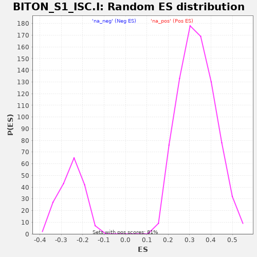

| | | Dataset | al10_v_al2 |
| Phenotype | NoPhenotypeAvailable |
| Upregulated in class | na_neg |
| GeneSet | BITON_S1_ISC.I |
| Enrichment Score (ES) | -0.8120251 |
| Normalized Enrichment Score (NES) | -3.2076075 |
| Nominal p-value | 0.0 |
| FDR q-value | 0.0 |
| FWER p-Value | 0.0 |
Table: GSEA Results Summary
 Fig 1: Enrichment plot: BITON_S1_ISC.I
Fig 1: Enrichment plot: BITON_S1_ISC.I
Profile of the Running ES Score & Positions of GeneSet Members on the Rank Ordered List
| PROBE | GENE SYMBOL | GENE_TITLE | RANK IN GENE LIST | RANK METRIC SCORE | RUNNING ES | CORE ENRICHMENT | | 1 | Sh3rf1 | | | 2596 | 0.036 | -0.3936 | No |
| 2 | Ces1d | | | 3497 | 0.011 | -0.5305 | No |
| 3 | Cox7a2l | | | 3750 | 0.003 | -0.5688 | No |
| 4 | Slc14a1 | | | 3935 | -0.002 | -0.5967 | No |
| 5 | Sord | | | 3954 | -0.003 | -0.5990 | No |
| 6 | Sorbs2 | | | 3967 | -0.003 | -0.6004 | No |
| 7 | Tprkb | | | 4052 | -0.005 | -0.6124 | No |
| 8 | Rnf43 | | | 4152 | -0.009 | -0.6262 | No |
| 9 | Eif4b | | | 4420 | -0.017 | -0.6645 | No |
| 10 | Tspan12 | | | 4435 | -0.017 | -0.6638 | No |
| 11 | Snx10 | | | 5078 | -0.039 | -0.7561 | No |
| 12 | Mtus1 | | | 5174 | -0.043 | -0.7635 | No |
| 13 | Pik3r1 | | | 5243 | -0.046 | -0.7663 | No |
| 14 | Trim2 | | | 5541 | -0.060 | -0.8019 | Yes |
| 15 | Chp1 | | | 5568 | -0.062 | -0.7956 | Yes |
| 16 | Arhgef26 | | | 5643 | -0.066 | -0.7959 | Yes |
| 17 | Agr3 | | | 5647 | -0.066 | -0.7853 | Yes |
| 18 | Rgcc | | | 5737 | -0.072 | -0.7870 | Yes |
| 19 | Nsa2 | | | 5764 | -0.074 | -0.7786 | Yes |
| 20 | Ivns1abp | | | 5974 | -0.089 | -0.7959 | Yes |
| 21 | Tmem171 | | | 5996 | -0.090 | -0.7840 | Yes |
| 22 | Efna1 | | | 6048 | -0.095 | -0.7759 | Yes |
| 23 | Npc2 | | | 6139 | -0.105 | -0.7722 | Yes |
| 24 | Nrn1 | | | 6174 | -0.110 | -0.7590 | Yes |
| 25 | Nme7 | | | 6235 | -0.119 | -0.7482 | Yes |
| 26 | Eif3e | | | 6255 | -0.121 | -0.7308 | Yes |
| 27 | Oat | | | 6288 | -0.126 | -0.7146 | Yes |
| 28 | Lbh | | | 6311 | -0.129 | -0.6964 | Yes |
| 29 | Arid5b | | | 6362 | -0.141 | -0.6804 | Yes |
| 30 | Prss23 | | | 6389 | -0.149 | -0.6594 | Yes |
| 31 | Filip1l | | | 6393 | -0.150 | -0.6348 | Yes |
| 32 | Igbp1 | | | 6406 | -0.154 | -0.6108 | Yes |
| 33 | Aqp1 | | | 6437 | -0.172 | -0.5867 | Yes |
| 34 | Lgr5 | | | 6476 | -0.207 | -0.5579 | Yes |
| 35 | Sypl | | | 6480 | -0.208 | -0.5235 | Yes |
| 36 | Kcnq1ot1 | | | 6514 | -0.275 | -0.4825 | Yes |
| 37 | Soat1 | | | 6519 | -0.285 | -0.4355 | Yes |
| 38 | Jun | | | 6528 | -0.349 | -0.3782 | Yes |
| 39 | Ogt | | | 6529 | -0.361 | -0.3177 | Yes |
| 40 | Fam13a | | | 6531 | -0.369 | -0.2561 | Yes |
| 41 | Olfm4 | | | 6534 | -0.484 | -0.1753 | Yes |
| 42 | Slc12a2 | | | 6535 | -0.494 | -0.0925 | Yes |
| 43 | Pdgfa | | | 6536 | -0.552 | -0.0000 | Yes |
Table: GSEA details [plain text format]

Fig 2: BITON_S1_ISC.I: Random ES distribution
Gene set null distribution of ES for BITON_S1_ISC.I